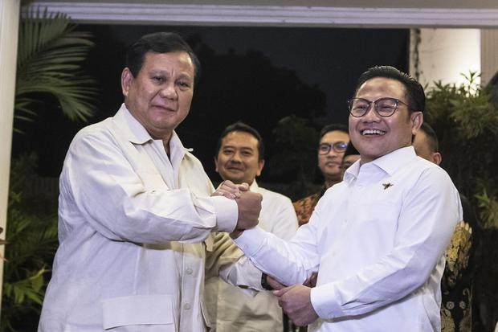

Gerindra-PKB Sepakat Koalisi, Demokat Bicara Soal Independensi Tentukan Mitra Parpol Tak Diganggu

Partai Demokrat meminta semua pihak menghargai dan menghormati kemandirian dan independensi partainya dalam menentukan calon mitra koalisi untuk Pilpres 2024.
Hal itu menyusul menanggapi Partai Gerindra dan Partai Kebangkitan Bangsa (PKB) secara resmi sepakat berkoalisi untuk Pilpres 2024 mendatang.
Awalnya Demokrat menghargai dan menghormati keputusan Gerindra dan PKB untuk berkoalisi Pilpres. Hal itu dianggap sebagai kemandirian dan indepedensi setiap partai politik.
"Kami menghargai dan mengapresiasi, kemandirian dan independensi setiap parpol untuk melaksanakan haknya, baik menggunakan istilah berkoalisi maupun bekerja sama, agar bisa memenuhi persyaratan ambang batas mengajukan calon presiden dan calon wakil presiden untuk Pilpres 2024, sesuai dengan UU Pemilu," kata Koordinator Juru Bicara DPP Partai Demokrat, Herzaky Mahendra Putra kepada wartawan dikutip Senin (15/8/2022)
Herzaky pun menyampaikan, Demokrat mengharapkan hal sebaliknya dimana kemandirian dan independensi partainya dalam menentukan calon mitra koalisi, untuk dihargai dan dihormati.
Demokrat meminta semua pihak tidak mengganggu, menggerogoti kemandirian, independensi partai politik dalam menentukan dengan parpol mana akan berkoalisi dan dalam menentukan siapa calon presiden dan calon wakil presiden yang akan diusungnya.
"Makin rusak dan hancur demokrasi kita kalau ada, kami tegaskan, kalau ada, ya, upaya abuse of power, baik oleh kekuasaan maupun alat-alat kekuasaan, yang berupaya mengintervensi kemandirian dan upaya parpol-parpol merangkai koalisi serta menentukan capres-cawapres yang akan diusungnya," tuturnya.
Untuk itu, Herzaky mengajak semua pihak hormati proses demokrasi sesuai dengan konstitusi yang berlaku. Menurutnya, Pemilu 2024 merupakan tahunnya rakyat.
"Mari kita hormati proses demokrasi yang sesuai dengan konstitusi ini. Pemilu 2024 adalah tahunnya rakyat. Saatnya rakyat berdaulat. Menentukan pemimpin terbaik menurut rakyat," tandasnya.
Sebelumnya, Partai Gerindra dan Partai Kebangkitan Bangsa (PKB) resmi menandatangani deklarasi koalisi Pemilu 2024. 
Deklarasi koalisi Gerindra dan PKB ini terjadi saat Rapat Pimpinan Nasional (Rapimnas) Partai Gerindra di Sentul International Convention Center (SICC), Kabupaten Bogor, Jawa Barat, Sabtu (13/8/2022).
Koalisi Partai Gerindra dan PKB secara langsung dideklarasikan oleh Ketua Umum Gerindra Prabowo Subianto dan Ketua Umum PKB Muhaimin Iskandar alias Cak Imin.
"Bekerja bersama dalam Pemilu Serentak, didasarkan pada visi bersama, agar terjadi percepatan pembangunan Indonesia," kata Ketua Harian DPP Partai Gerindra Sufmi Dasco Ahmad membacakan naskah kerja sama.
Sementara, Wakil Ketua Umum PKB, Jazilul Fawaid saat membacakan naskah deklarasi, menyebutkan bahwa koalisi kedua partai tersebut didasari tujuan yang mulia.
"Agar negara Indonesia secara berdaulat dan turut menciptakan perdamaian dunia," kata Jazilul membacakan poin lainnya.